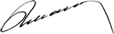

SÜRDÜRÜLEBİLİRLİK RAPORU 2014
Yönetim Kurulu Başkanı’nın Mesajı

Paydaşlarımızın hatırlayacağı üzere, Ziraat Bankası’nın ilk sürdürülebilirlik raporu, G3.1 standardında hazırlanmış ve GRI’dan A+ seviye raporlama parametrelerine tam uygunluk onayı almıştır. 2014 raporumuz, yeni nesil küresel raporlama kriterlerine uygun ve tam uyumlu olarak hazırlanmıştır. G4 standardının en geniş çerçevesini ifade eden “kapsamlı seviye”de oluşturulan bu rapor ile çok daha şeffaf ve çok daha odaklı olmayı gerektiren bir metodolojiyi benimsemiş bulunuyoruz. Raporumuz aynı zamanda Türkiye’de kamu sermayeli bir banka tarafından hazırlanan G4 standardındaki ilk rapor olması açısından da değerli bir örnek ve referans teşkil etmektedir.
Güçlü kalkınmanın sağlanması ve geleceğin inşası sürecinde, sürdürülebilirliği, Ziraat Bankası’na ve paydaşlarına yol gösterecek temel öğelerden biri olarak kabul ediyoruz.
Faaliyetlerimizi geniş ve global ölçeğe sahip bir paydaş kitlesi ile sinerjik bir etkileşim içinde yürütüyoruz. Hissedarımız, çalışanlarımız, müşterilerimiz ve tedarikçilerimiz ana paydaş grubumuzu oluştururken, düzenleyici kurumlar, uluslararası bankalar ve yatırımcılar, medya ile sektörel birlikler ve toplum diğer paydaşlarımızdır. Çalışmalarımızı paydaşlarımız ile işbirliği, saygı ve denge içinde yürütmeye odaklıyız ve bunun sürdürülebilirlik adına önemli olduğuna inanıyoruz.
Ziraat Bankası’na göre sürdürülebilirlik, paydaşlarımızın, bugün olduğu gibi gelecekte de ihtiyaçlarını eksiksiz karşılayabilecekleri ekosistemi yaşatabilmektir. Sürdürülebilirlik politikamız, insanın ve doğanın üretken bir ahenk içinde var olması için gereken koşulları ortaya koymakta, bizlerin olduğu kadar gelecek nesillerin de sosyal, ekonomik ve toplumsal gereksinmelerini karşılamalarına imkan sunmaktadır.
Bu doğrultuda son dönemde, küresel gündemi en çok meşgul eden konular arasında yer alan iklim değişikliği, düşük karbon ekonomisine geçiş ve toplumsal kalkınma konularını öncelikli gündem maddelerimiz olarak kabul ediyoruz. Değişmez hedefimiz, hizmet döngüsü kapsamında bu alanlarda pozitif fark üretmektir. İnanıyoruz ki şirketler büyümeyi ve kârlılığı sürdürülebilir hale getirmek için, yaşadıkları toplumun ve çevrenin geleceğini gözetmeli, bu konularda iyileştirici, geliştirici ve kapsayıcı faaliyetlerde bulunmalıdırlar.
Köklü tarihi boyunca her zaman ve her koşulda öncü ve lider olmayı başaran ve faaliyet gösterdiği coğrafyanın kalkınmasına sürekli katkıda bulunan Ziraat Bankası’nın değişmez hedefleri;
Bizleri bu hedeflerimize ulaştıracak yegane araç ise son 3 yıldır stratejik bir bakış açısıyla yönettiğimiz dönüşümdür.
Dönüşümün gelişen bir süreç olduğunun ve süreklilik gerektirdiğinin bilincindeyiz. Ziraat Bankası, kendini yenilemeye devam etmekte, müşterilerini her türlü faaliyetin odağında görerek hareket etmekte ve günümüzün sıkı rekabet koşullarının gereklerini “öncü ve lider sorumluluğuyla” yerine getirmektedir.
Dünyanın 16 ülkesinde, 85 noktada faaliyet gösteren Ziraat Bankası global bir hizmet sağlayıcı olmanın yanı sıra Türkiye’nin uluslararası pazarlarla olan ticari ilişkilerinde de doğal bir köprüdür.
Tüm bu vasıflarımız bir arada değerlendirildiğinde, stratejik yönetimin bizler açısından anlamı, önemi ve vazgeçilmezliği ortaya çıkmaktadır.
Müşterilerimizi, insan kaynağımızı, uzun vadeli performans üretme gücümüzü, güçlü bilançomuzu ve kurumsal yönetim yapılanmamızı sürdürülebilirlik anlayışımızın temel taşları olarak kabul ediyoruz.
Müşterilerimiz varlık nedenimiz ve sürdürülebilirliğimizin temelidir. Müşterilerimizin teveccühü, güveni ve sadakati, Ziraat markasının 152 yıllık sektör liderliğinin çimentosudur. Temel ve değişmez hedefimiz, müşterilerimize sektörümüzdeki en iyi hizmet deneyimini yaşatmak ve değer önerisi güçlü ürün ve hizmetler ile hayatlarında yer almaktır. Müşterilerimizden aldığımız geri dönüşler, memnuniyetlerinin her geçen dönem yükselmekte olduğunu işaret etmekte ve bu durum bizi yenilikçi atılımlar yapmak için cesaretlendirmektedir.
Hiç kuşkusuz Ziraat Bankası sürekliliğini çalışanlarına borçludur. Bu gerçeği sürdürülebilir kılmak adına insan kaynağımıza sürekli yatırım yapıyor ve çalışanlarımızı, değişen ve gelişen iş dünyasının gerektirdiği yetkinliklerle donatıyoruz. Ziraat Bankası’nda motivasyon ortamını ve ekip ruhunu geliştirmeye özel önem gösteriyoruz.
Memnuniyetle ifade etmek isterim ki, ölçülebilir tüm performans kriterleri, Bankamızın tutarlı bir insan kaynağı deneyimini başarıyla sürdürdüğünü ortaya koymaktadır.
Sürdürülebilir ve uzun vadeli performans hedefimiz kapsamında tüm yatırımlarımızı, operasyonel maliyetleri ve etkinliği gözeten bir yaklaşımla hayata geçiriyoruz. Maliyet tabanımızı başarıyla kontrol ediyor, gelir kaynaklarımızın rekabet koşullarına uygun şekilde çeşitlenmesine yönelik çalışmalarımızı aralıksız sürdürüyoruz.
Yasalara tam uyumlu, çağdaş, kurumsal yönetim uygulamalarımız; marka ve hissedar değeri üretmek, korumak ve geliştirmek sürecinde kilit önem arz etmektedir. Diğer taraftan, sürdürülebilirlik yönetimini önemsiyor ve kurumsal yönetim yapılanmamızın ayrılmaz bir parçası olarak değerlendiriyoruz.
Raporumuzu yayına hazırladığımız 2015 yılı yeni atılımlarımıza ve başarılarımıza tanıklık ederken, Ziraat Bankası’nın hedefleri Sürdürülebilirlik Politikası çerçevesinde;
Bu konulardaki faaliyetlerimizi çok yönlü olarak yürütmeye ve önümüzdeki dönemde de ölçeğimizin sunduğu eşsiz finansal kaldıracı, sürdürülebilirliğin etki alanını genişletmek adına kullanmaya kararlıyız.
Tedarikçilerimiz, çalışanlarımız, kredi kullandırdığımız milyonlarca firma ve bireyler bir bütün olarak değerlendirildiğinde; Ziraat Bankası’nın ekonomik gelişme ve toplumsal refah eksenindeki etkisi ile ortaya çıkan kitlenin ne denli büyük ve geniş olduğu açıkça görülmektedir. Ziraat Bankası bu yaygın kitleye kılavuzluk ve öncülük ederek, sürdürülebilirliğin temellerini toplum çapında güçlendirmeyi ve ürettiği katma değeri çarpan etkisiyle büyütmeyi hedeflemektedir.
Tarım sektörünün, başta su olmak üzere doğal kaynakları en doğru şekilde kullanması, verimliliğin artması ve rekabet gücünün gelişmesi; KOBİ’lerimizin üretim kapasitelerinin artırmaları ve çalışma koşullarını evrensel değerler ışığında daha da geliştirmeleri; enerji başta olmak üzere kaynak verimliliğinin her sektörde ve her işletmede sağlanması akla ilk gelen konular olup paydaşlarımızla beraber değer üretebileceğimiz sayısız alandan sadece birkaçını işaret etmektedir.
Kanaatimizce, sürdürülebilir kalkınma için sadece hükümetlere değil; özel sektöre, sivil inisiyatiflere ve üniversitelere, özetle herkese önemli görevler ve sorumluluklar düşmektedir.
Ziraat Bankası, insanlığın ve gezegenimizin geleceğini ilgilendiren, her birimizin refah seviyesini ve yaşam koşullarını etkileyecek olan bu yolculukta daha fazla görev üstlenmeye hazırdır.
Özgüveni, enerjisi, dinamik yapısı, kurumsallaşmış iş süreçleri, BT altyapısı, nitelikli insan kaynağı ve mali gücüyle bunu başarmak, Ziraat Bankası’nın en önemli hedeflerindendir.
Ziraat markasına güveniniz, katkınız, desteğiniz ve tercihiniz için şahsım ve Yönetim Kurulumuz adına şükranlarımı sunarım.
Mesajıma son verirken, paydaşlarımızı, sürdürülebilirlik performansımıza ilişkin yorum ve görüşlerini surdurulebilirlik@ziraatbank.com.tr e-posta adresimiz üzerinden paylaşmaya davet etmek isterim.
Saygılarımla,
